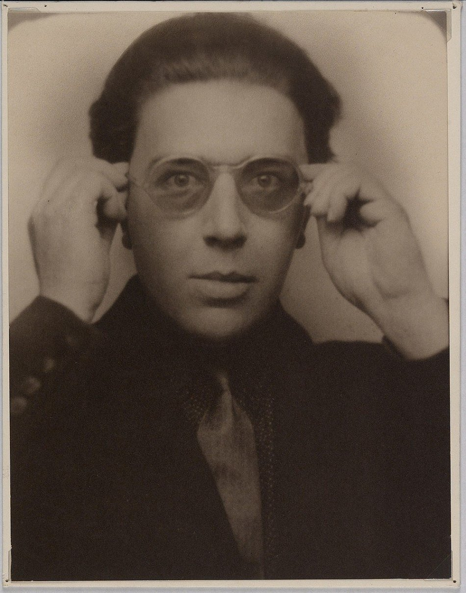

I can't read all this

We are still living under the reign of
Logic.
Freud (Sigmund) has introduced to us the concept of the
The human
explorer
will be able to carry his investigation
much further,
authorized as he will henceforth be not to confine himself solely to the
most summary realities.
this suggests
beyond reality
surrealism suggests
beyond reality
How does one express their contempt following the war? To want fantasy and
imagine the unreal——was the war not enough to guide one's thoughts to
something else? This is an act against rationalism. Rationalism has ruined
us in this War.
We aim to unite the consious with the subconsious and bring this marriage
into the real world.